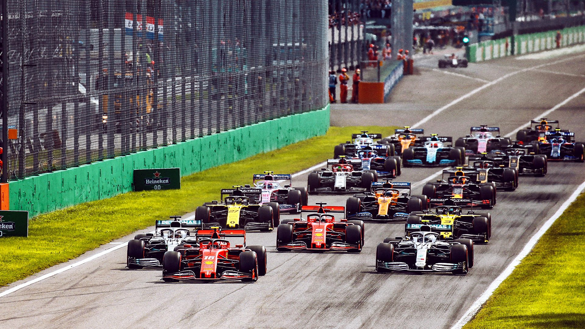

ITALIAN GRAND PRIX
Cicuit Length:
5.793 km (3.600 mi)
Turns:
9
Number of Laps:
53
First Grand Prix:
1950
Race Distance:
306.72 km
Italian's race takes place in Monza. Monza is a city in Italy,
about 123 thousend people live in Monza. And across Italy live about 60,4 Million inhabitants. So far the record holder of this circuit is Rubens Barrichello.
This year (2021) the race will be on September 12. The fastest speed last year (2019) was measured at 360.8 km/h.
The most wins on this track are Scuderia Ferarri, in total they've won 20 times on this track.

Winners of the Italian GP
2020 - Pierre Gasly
2019 - Charles Leclerc
2018 - Lewis Hamilton
2017 - Lewis Hamilton
2016 - Nico Rosberg
2015 - Lewis Hamilton
2014 - Lewis Hamilton
2013 - Sebastian Vettel
2012 - Lewis Hamilton
2011 - Sebastian Vettel
2010 - Fernando Alonso
2009 - Rubens Barrichello
2008 - Sebastian Vettel
2007 - Fernando Alonso